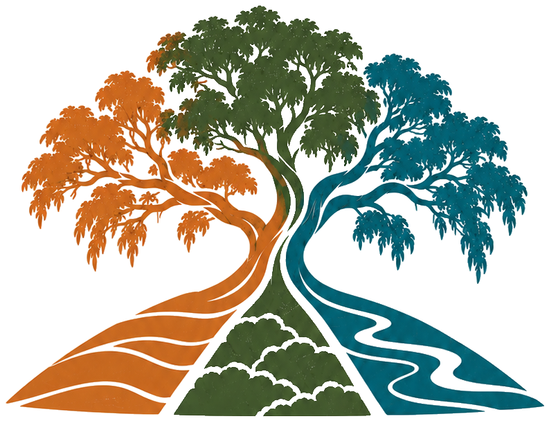
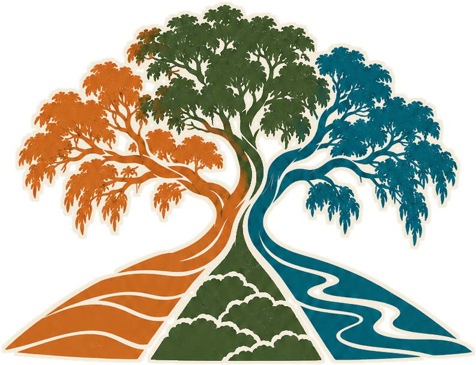

CULTIVATE NATURENature in Australia runs on goodwill, and goodwill is running out. We put real business models underneath the people and places doing the work.
We help nature ventures transition to being profitable and sustainable. We get in and share the risk and the reward.
And we help businesses put real nature programs to work: products, partnerships and projects that are good for nature and good for business.
We are not consultants watching from the sidelines. We get in, carry risk alongside the venture, and win only when it does.
We put business models underneath the operations, so every donation and sponsorship funds the future instead of the power bill. We do not run charities and we never compete with them. We make their work go further.
When a founder needs a way forward, we transition ownership for longevity and purpose. We have spent a decade doing it for farms, and the nature sector needs it just as badly.

Bring us your venture, or bring us your company.
If you run a nature venture that deserves a future, or a business that wants a real nature story instead of a borrowed one, we would love to talk. First Nations partnership is part of how we work, not an add on.
Talk to Sam Marwood